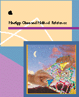

MacApp Class and Method Reference
- MacApp is an object-oriented application framework that
provides many of the basic features of a standard Macintosh
application. MacApp handles the details of working with the
Macintosh Operating System and user interface, allowing you to
concentrate on your areas of expertise.
-
- The MacApp Class and Method Reference provides complete
descriptions of the classes, methods, fields, global variables,
and functions that you can use in both the classic 68K and PowerPC
environments.
-
- A companion book, the Programmer's Guide to MacApp, explains
the theory, architecture, and features of MacApp, and provides
sample code and step-by-step instructions for implementing
applications with MacApp.
Availability: Click below to obtain MacApp Class and
Method Reference in the following format:
© Apple Computer, Inc.
1986, 1985-96